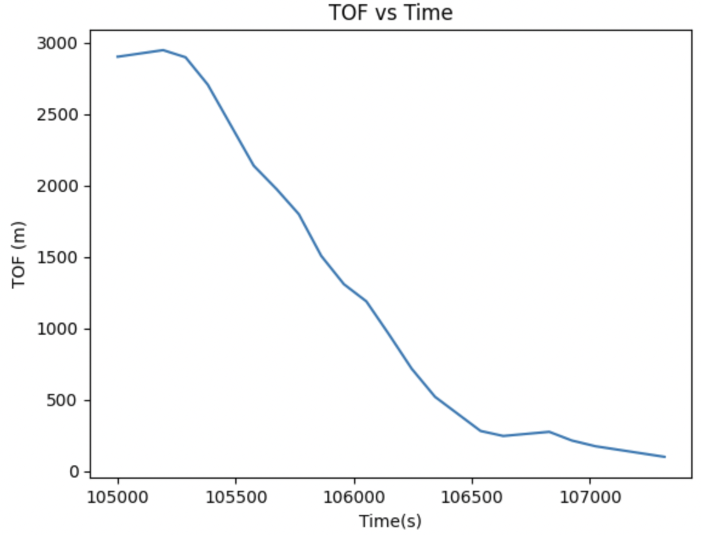
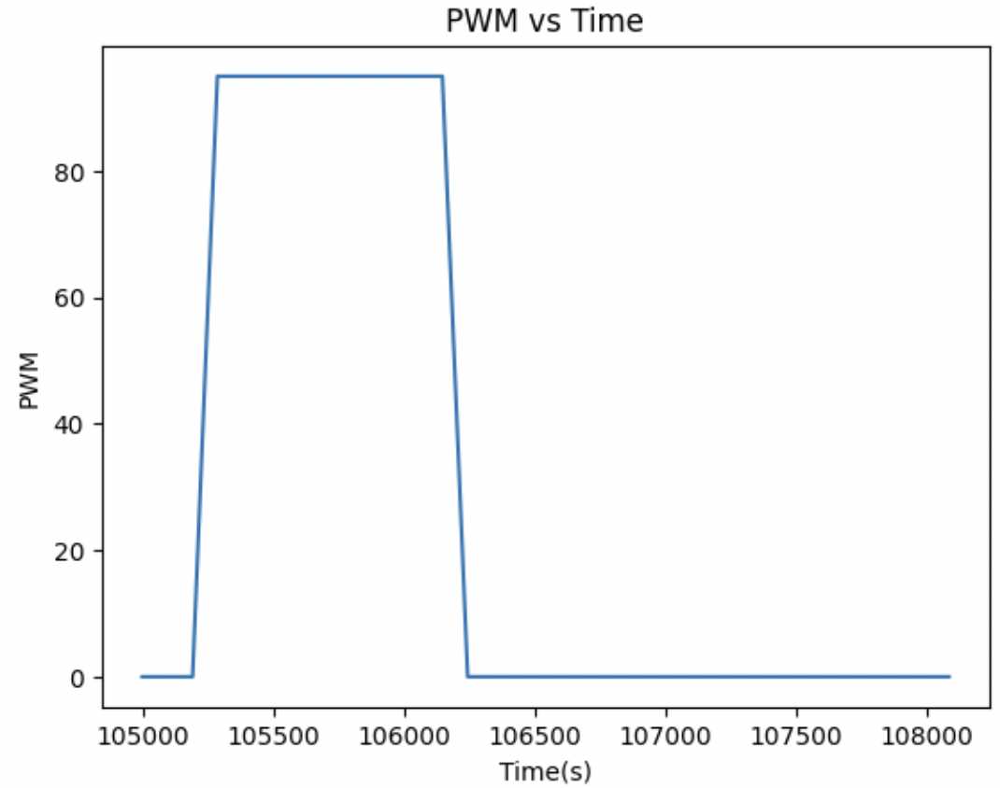
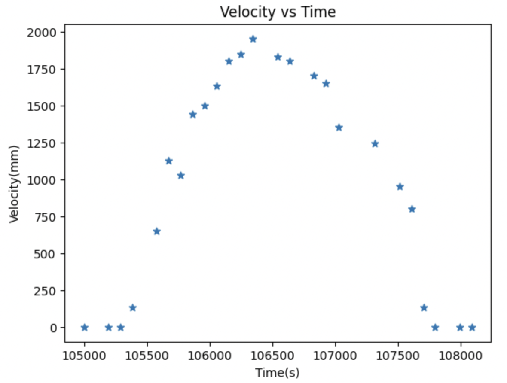

Lab 7 Kalman Filter
The purpose of this lab was to use the Kalman filter to speed up the behavior that was executed in Lab 6 as well as make it more accurate. The Kalman filter uses the TOF sensor readings to make a more precise position estimate based on the pwm input as well.
DRAG + MOMEMTUM ESTIMATE
Before creating a Kalman filter, I wanted to create a state space model for my robot based on the lecture in class. I used a step response to be able to measure the TOF + PWM data as the robot moved. I then plotted these graphs below.



To find the values of drag and momentum, I used the A matrix that was discussed in lecture and the equations for d and m.
d = u / ẋ
m = -dt / ln (1 - 0.9)
From the graphs plotted above, I can determine the steady state velocity, which is defined as the peak velocity that the robot stops acceleratingw hen ran at the max PWM value that is defined from lab 6. The 90% rise time is the time that it takes to reach 90% of the steady state velocity found above.
ẋ = 1900 m/s
t(0.9)= 1.25 s
INITIALIZE KALMAN FILTER
---------
-------
------
Tuning PID
------
Demonstration of PID
-----